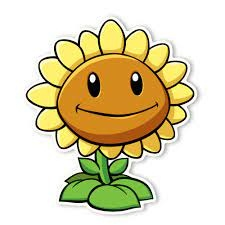
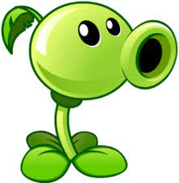
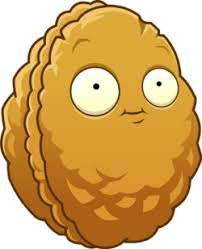
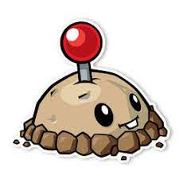

Las plantas son nuestra principal arma para defendernos de los zombies. Algunas pueden hacer poco daño, daño mediano o mucho daño.
Las plantas pueden dividirse por:
A continuación se presentan una descripción de las plantas más básicas y primordiales del juego.
| Girasol |
|  |
| Producción de sol: normal Recarga: rápida |
Los girasoles son las más importates porque con ellas podemos recolectar más soles y así poder usar plantas caras cuando se está en una partida. Generalmente las plantas caras tienen mayor daño. |
| Lanzaguisantes |
|  |
| Daño: 20 (a nivel 1) Recarga: rápida Coste en soles: 100 |
El Lanzaguisantes es la primera planta de ataque que adquirimos en el juego. Ésta planta lo que hace es lanzar guisantes a los zombies con un máximo de 10 disparos para acabar con un zombie normal (en su nivel 1). |
| Nuez |
|  |
| Dureza: 4000 Recarga: lenta Coste en soles: 50 |
La Nuez nos va a ayudar a proteger a nuestra defenza plantas de los ataques de los zombies. Puede absorber una gran cantidad de daño y es perfecta para detener a un zombie miestras recargas sol para una planta de ataque. |
| Papapum |
|  |
| Coste en soles: 25 Recarga: lenta Daño: 1800 |
Las Papapums son plantas de uso único que tienen la particularidad de explotar cuando entran en contacto con un enemigo, aunque son vulnerables mientras se arman. El tiempo de armado puede ser de menor duración si se sube de nivel. |